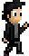

We are a small group dedicated to create games in our spare time, yet, we want this to be a full time job. We are passionate by games that have an extra sense of art and the technology behind them. Since we don't have that much time to create a full fledged website, even though Rafael and João Vitor have the knowledge to do so, we decided to go with wordpress for the mean time. Info about our creations will be posted here as a result. We mostly use free or open source tools to create our games, not because they're cheap, but because they are beautiful. Now, about the team behind SheetColdGames (yes, it's just one word):
Rafael started composing music back in 2006. He thought he could be a musician or something, but after the final project of his technical course (a game), he decided that make games would be his life. You can see some of his (not so) old works here:
Soundcloud / Youtube / Twitter
Always doodling around with any notebook he could find, he was introduced to pixel art by Rafael on their first project and never went back.
Twitter
Just got into Computer Science and it's trying to keep up with the pace of creating games with Rafael. His dream is to build his own full fleshed Engine using Java (I'm kidding about the Engi... I mean, Java).
Github

We'd like to thank our friend Airine Carmo, for the awesome logo design for our team. I mean, it's brilliant.

We also would like to thank Britt Brady (Gloom) for his help with art and music on Beneath Lights for the Ludum Dare.
Also, mad thanks for Victor Moura for the general creative help (and for staying up til late through dawn giving artistic support) on Clockwork Gear Hunters for the GBJam3.